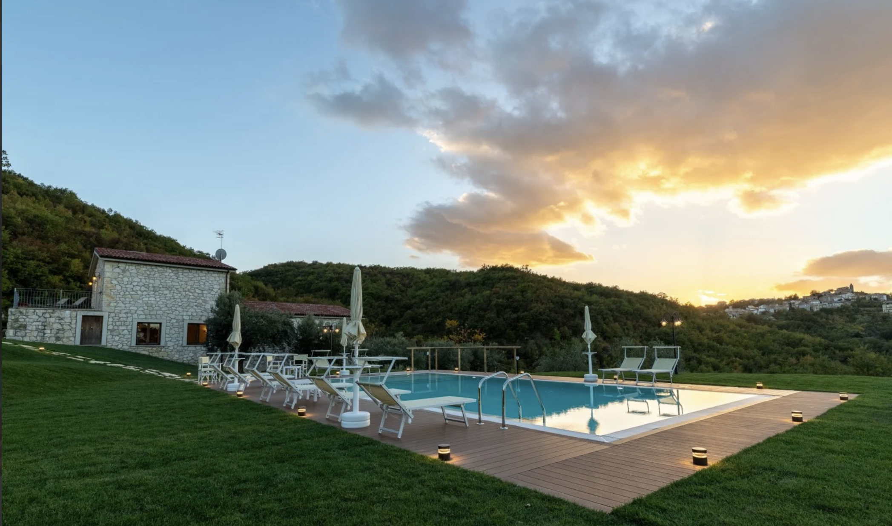
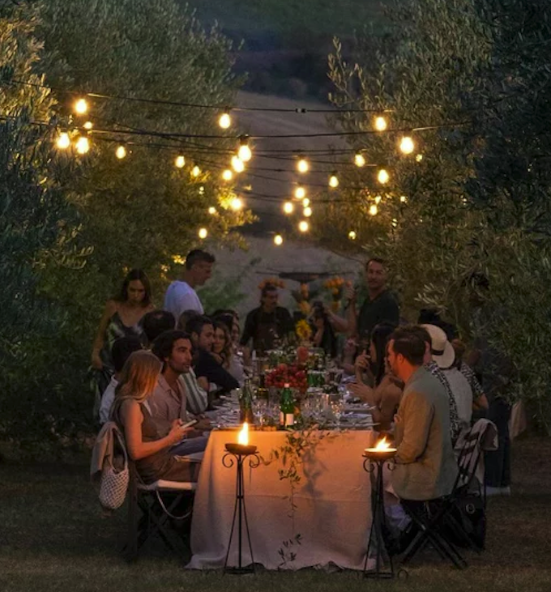
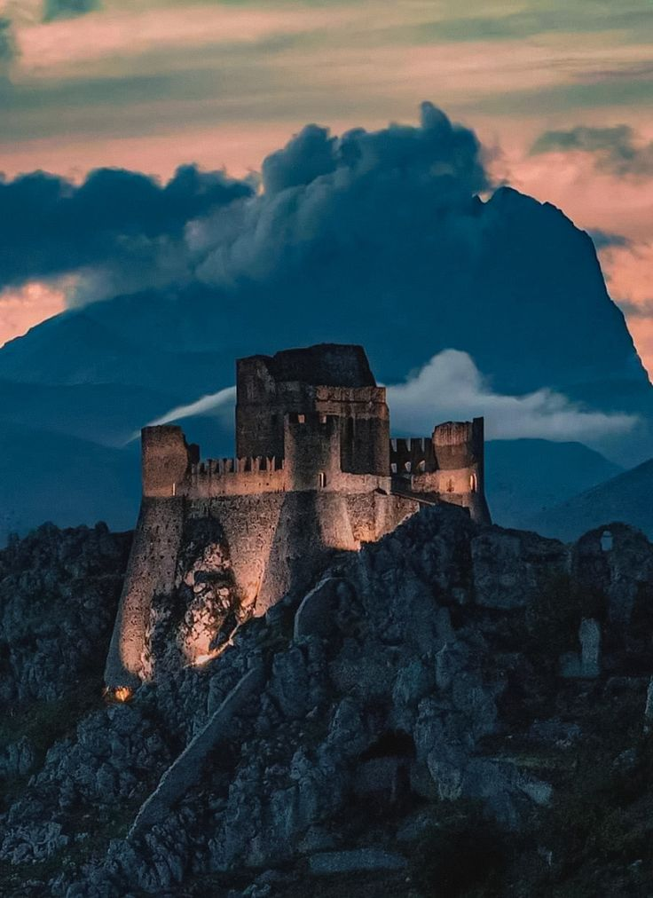
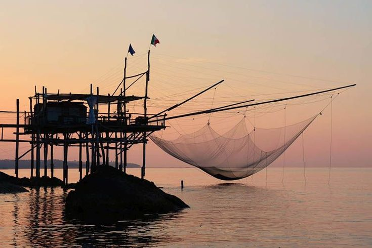
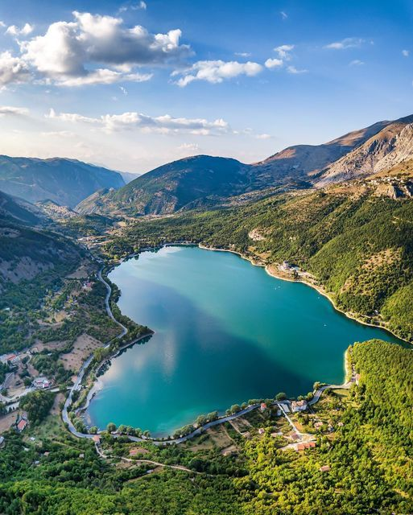
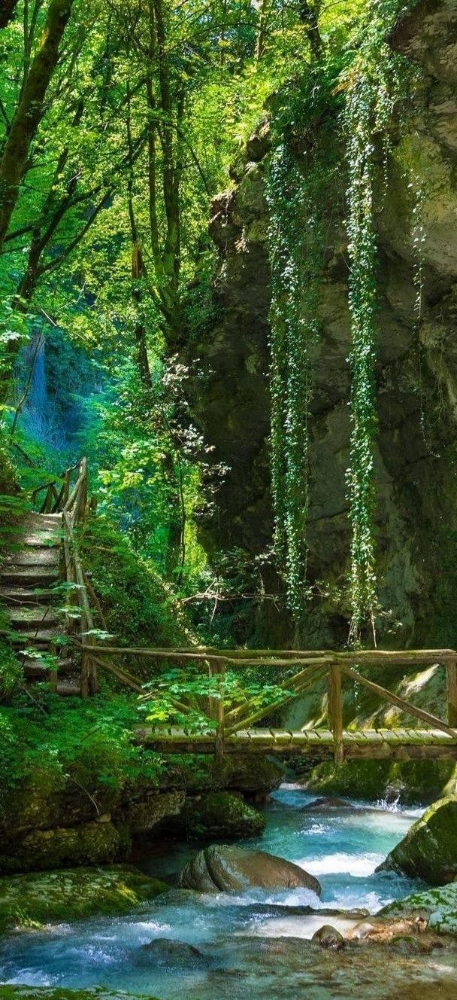
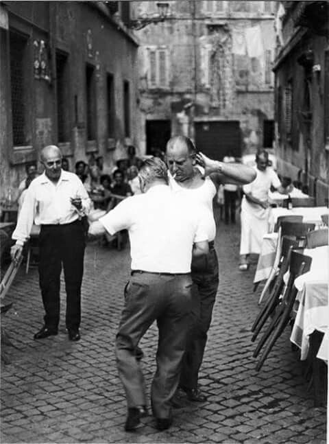

25. Juli — 1. August · Italia
Stell dir vor: Du frühstückst auf 1.500 Metern mit Blick auf schneebedeckte Gipfel — und bist mittags am Strand. In den Abruzzen ist genau das Realität. Von den höchsten Bergen des Apennins bis zur Adriaküste vergehen gerade mal 45 Minuten mit dem Auto. Der Gran Sasso (2.912 m) ist der höchste Gipfel Italiens südlich der Alpen — und hat sogar ein eigenes Hochenergielabor tief im Felsen, weil die dicke Gesteinsschicht kosmische Strahlung abschirmt. Ja, in diesem Berg steckt ein Teilchenbeschleuniger.
Die Abruzzen haben turbulente Vergangenheit: Römer, Normannen, Staufer, Anjou, Spanier — alle wollten hier regieren. Im Mittelalter blühte die Region unter Friedrich II. auf, der Sulmona zu einer wichtigen Stadt machte. 1703 und erneut 2009 erschütterten verheerende Erdbeben die Region — L'Aquila wurde dabei fast vollständig zerstört und wird bis heute wiederaufgebaut. Während des Zweiten Weltkriegs war der Gran Sasso Schauplatz einer der spektakulärsten Aktionen überhaupt: Mussolini wurde hier 1943 von deutschen Fallschirmjägern befreit — direkt aus dem Hotel auf dem Gipfel.
Wer in den Abruzzen ein temperamentvolles «Mamma mia!» erwartet, wird überrascht. Die Menschen hier sind anders als das Klischee: ruhig, wortkarg, bodenständig. Das Regionalsprichwort bringt es auf den Punkt: «Forte e gentile» — stark und sanft. Kein Getue, keine Show. Die Abruzzen waren Jahrhunderte lang eine der ärmsten Regionen Italiens — hart umkämpftes Bergland, wenig Ackerbau möglich, viel Viehzucht. Das hat die Menschen geprägt. Viele Familien lebten noch bis weit ins 20. Jahrhundert als Wanderhirten (Transumanza), die mit ihren Herden im Frühling auf die Hochalmen zogen und im Herbst wieder ins Tal.
Heute sind Landwirtschaft und Schafzucht noch immer präsent — Safran, Linsen, Dinkel und Olivenöl aus der Region gelten als einige der besten Italiens. Arrosticini — winzige Lammspieße auf Holzkohle, ein Cent-Gericht der Hirten — sind zum Nationalgericht der Abruzzen geworden. Man isst sie im Stehen, man redet dabei nicht viel, und man braucht mindestens zwanzig davon. Das versteht hier jeder ohne Erklärung.
Die typischen Bergdörfer (Borghi) sitzen auf Felsvorsprüngen wie hingeworfene Steinwürfel — enge Gassen, Torbögen, Brunnen aus dem 13. Jahrhundert. Die Kirchen sind oft romanisch mit unfertig wirkenden Fassaden — kein Zufall: Erdbeben haben hier Generation für Generation Bauprojekte unterbrochen. Trabocchi sind ein einzigartiges Küstenpanorama: fragile Holzgerüste auf Stelzen, die ins Meer ragen — ursprünglich Fischfallen, heute Kultrestaurants. UNESCO-Kandidat. Kein anderes Land hat so etwas.
Die Abruzzen sind ein Paradies für Outdoor-Enthusiasten — und zwar das ganze Jahr. Im Winter locken Campo Felice und Ovindoli mit soliden Skitagen, Roccaraso gilt als einer der besten Skigebiete Mittelitaliens. Im Sommer wird dasselbe Gelände zur Wander- und Mountainbike-Arena. Klettern: Die Felswände bei Civitella Alfedena und am Gran Sasso bieten Routen für jeden Level — von Anfänger bis Experte. Wildwasser: Der Sangro und Aventino sind für Rafting- und Kayaktouren bekannt. Am Meer: Nur 45 Minuten bis zur Adriaküste — Kitesurfen, Tauchen, SUP.
Fun Facts: Der Gran Sasso-Marathon ist eine der härtesten Bergläufe Italiens. Der Nationalpark Abruzzo, Lazio e Molise — gegründet 1923 — war Italiens erster Nationalpark überhaupt und rettete den Abruzzenwolf sowie den Marsicabären vor dem Aussterben. Heute leben hier rund 50 Bären und 100 Wölfe wild in den Bergen.







Eine Woche Bergdörfer, Trabocchi, Seen und unvergessliche Momente.